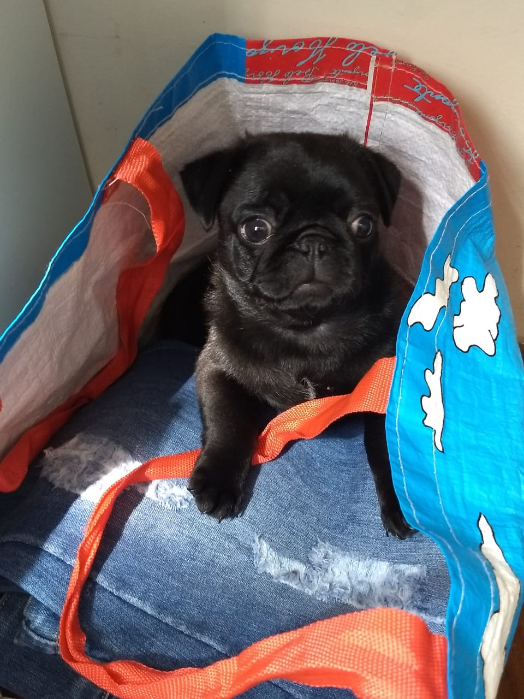
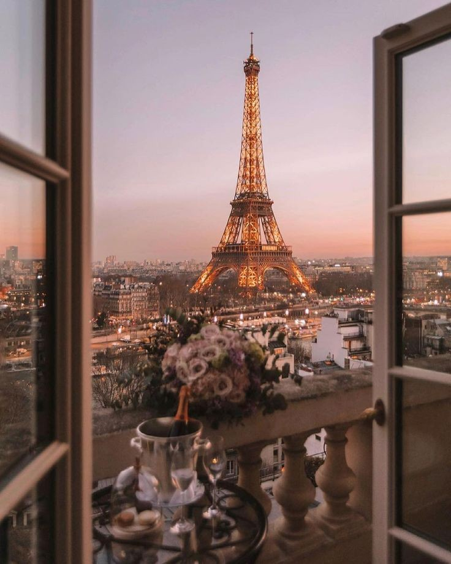
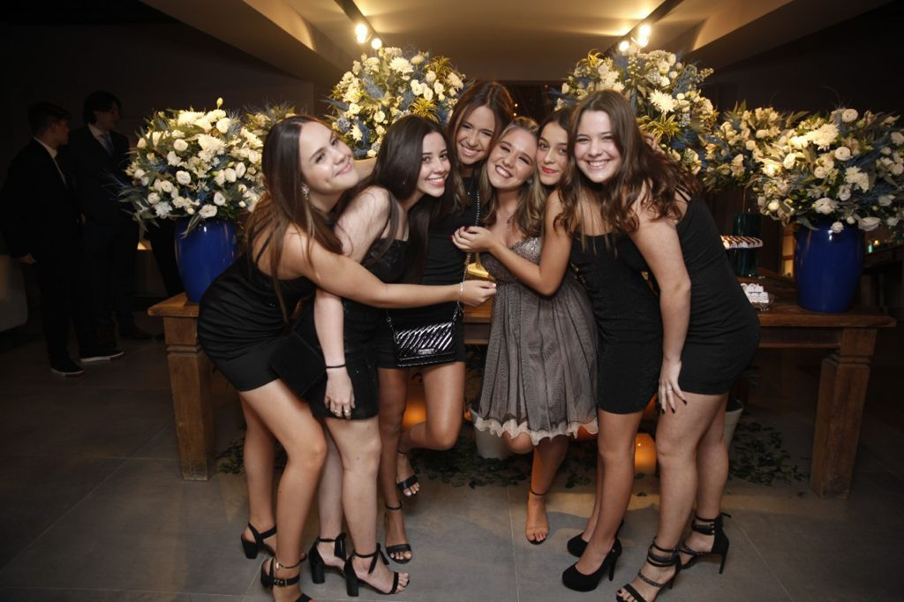
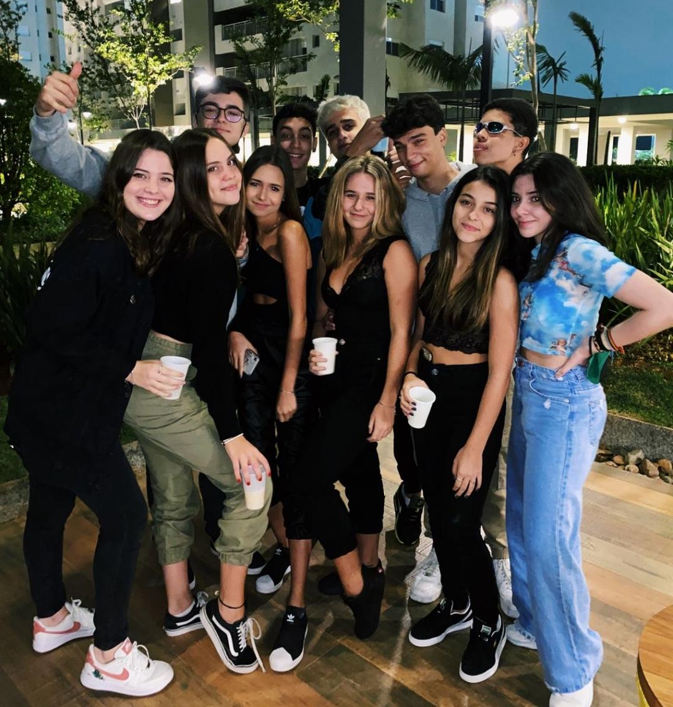
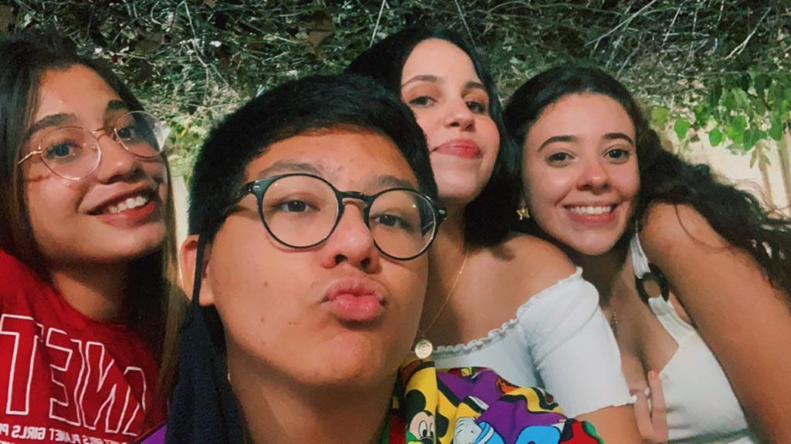

Oii gente!!!!
Meu nome é Nathália, mas meus amigos me chamam de nathy!
Eu tenho 16 anos e nasci dia 28 de janeiro. Meu signo é aquário mas eu não sei o que isso significa 🙃.
Eu amo comer, ver séries, sair com os meus amigos,viajar, escutar músicas e ver filmes.
Como eu disse antes eu gosto de ouvir música, mesmo gostando de todos os tipos de música eu ainda tenho os meus cantores preferidos.
Meus cantores preferidos são: o Shawn Mendes, Harry Styles e Bruno Mars!!
Eu também gosto do One Direction, mas eles não são mais uma banda, então eu escuto as músicas antigas deles e as músicas da carreira solo de cada um.
Eu gosto muito de comer.
Minhas comidas salgadas favoritas são: japonesa, lasanha e torta de frango e minhas comidas doces favoritas são: torta de morango, donuts e cookie.
Eu assisto muitos filmes, mas meus favoritos são Mamma Mia, Enrolados,Ratattouile e Clueless. E minhas séries favoritas são Grey's Anatomy, The Vampire Diares e Brooklyn 99.
Eu gosto muito de sair e viajar. Para viajar eu gosto de ir pra praia e para sair eu gosto de ir em qualquer lugar.
Além de todas essas coisas eu também gosto muito de meditar e fazer coisas que trazem uma vibe mais namastê e natureza. Eu também gosto muito de tirar fotos das coisas.
Eu tenho uma cachorra.
Ela é uma pug preta e se chama Shakira.
Eu ganhei ela dia 02 de setembro de 2018.
Ela é a minha coisa favorita do mundo, porque ela é a minha companheira, minha neném e me faz muito feliz.
Eu amo animais, então além da minha cachorra eu sempre quis ter outros, o único problema é que meus animais favoritos não podem viver em casa
Sem ser cachorro, meus animais favoritos são: porco( mas aqueles pequenininhos fofinhos), golfinhos, baleias, girafas, cobras e borboletas.
Eu amo viajar, e meu sonho é conhecer o mundo todo.
Mesmo querendo viajar o mundo todo, existem dois lugares que sempre foram o meu maior sonho conhecer.
O primeiro é a Grécia, eu acho esse lugar maravilhoso, as casa e a cidade são lindas e água é um azul quase transparente.
Além do idioma ser muito bonito e diferente.
O outro lugar é Paris, desde pequena meu sonho é visitar Paris por causa da Torre Eifel e do croissaint.
também porque Paris parece ser um lugar muito bonito.
Eu também queria muito ir pro Canadá, mas esse já não é um sonho, eu só queria fazer intercâmbio lá mesmo.
Eu tenho alguns amigos,e eu sei que posso contar com eles a qualquer momento.
Meus amigos são incríveis e muito engraçados.Eu amo todos eles!!!
Eu tenho um grupo com as minhas melhoras amigas, o nome do grupo e "Tropa toda".
Além delas tem o resto dos meu amigos e meu melhor amigo Lucca.
Já faz muito tempo que todos nós somos muitos amigos, acho que são mais ou menos uns 6 ou 7 anos.
  